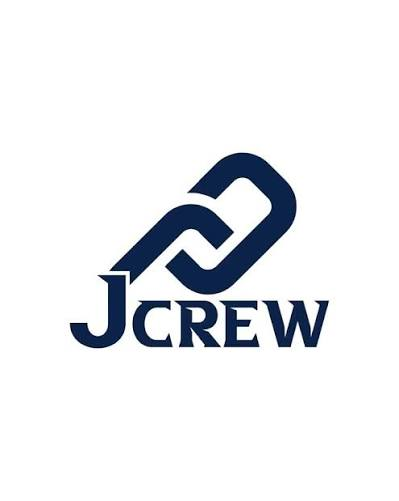

화장품 MD를 위한 성분 기반 시장 분석 대시보드입니다. 네이버 검색 트렌드, 올리브영 리뷰 감성 분석(KoELECTRA), 수요-공급 매트릭스를 한 화면에 모아 제품 기획 의사결정을 돕습니다.
자세히 보기 →04 · Projects
프로젝트

유소년 농구교실을 위한 AI 통합 관리 플랫폼. 코치로서 겪은 행정 업무의 비효율을 직접 개선하기 위해 만들었습니다. 출석 체크, 실시간 채팅, 이탈 위험 분석과 월간 리포트를 AI 에이전트가 자동으로 생성합니다.
자세히 보기 →
🍊
JejuTrip AI
슬롯별 취향을 입력하면 AI가 제주 여행 코스를 자동 생성하고, "2일차 점심 해산물로 바꿔줘" 같은 자연어 명령으로 실시간 수정할 수 있는 맞춤형 여행 추천 서비스입니다. 직접 수집한 리뷰 데이터로 실존하는 장소만 추천합니다.
자세히 보기 →